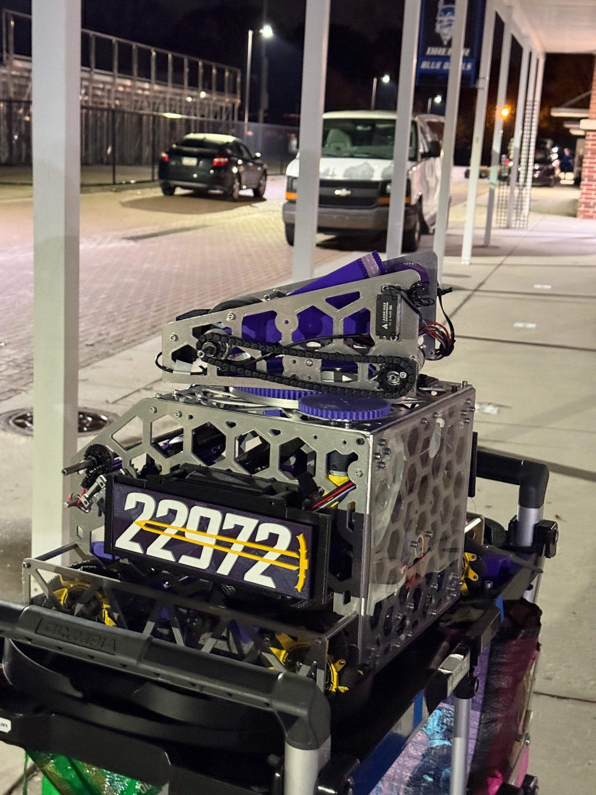
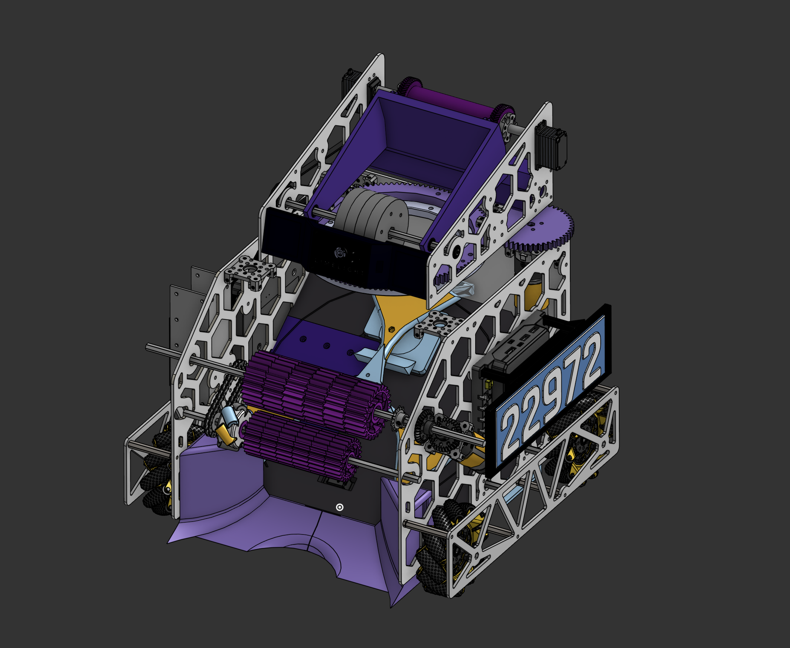
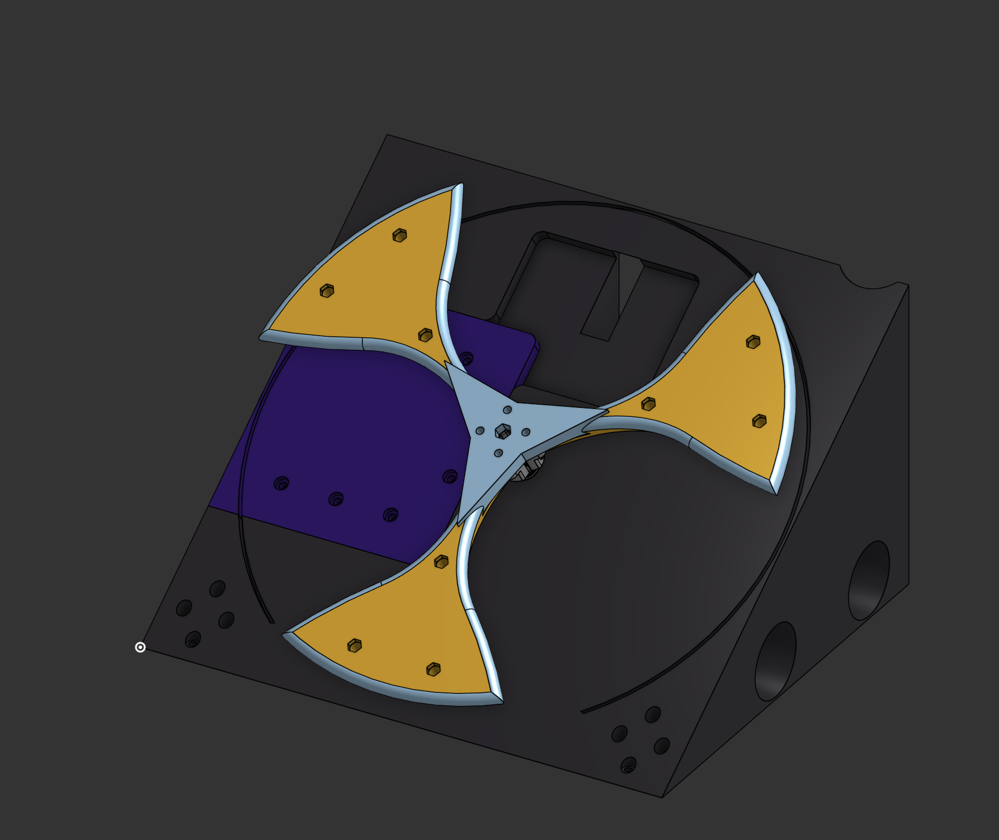
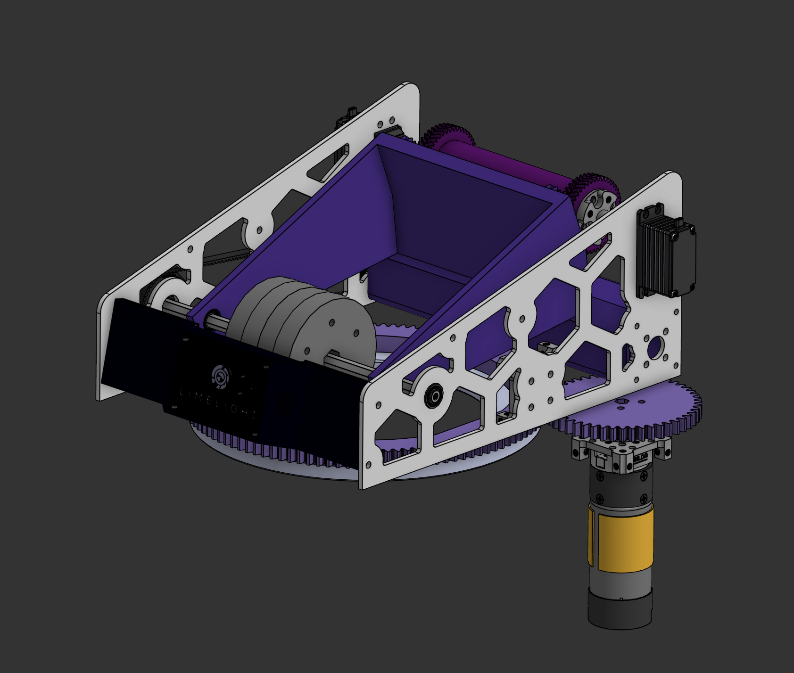
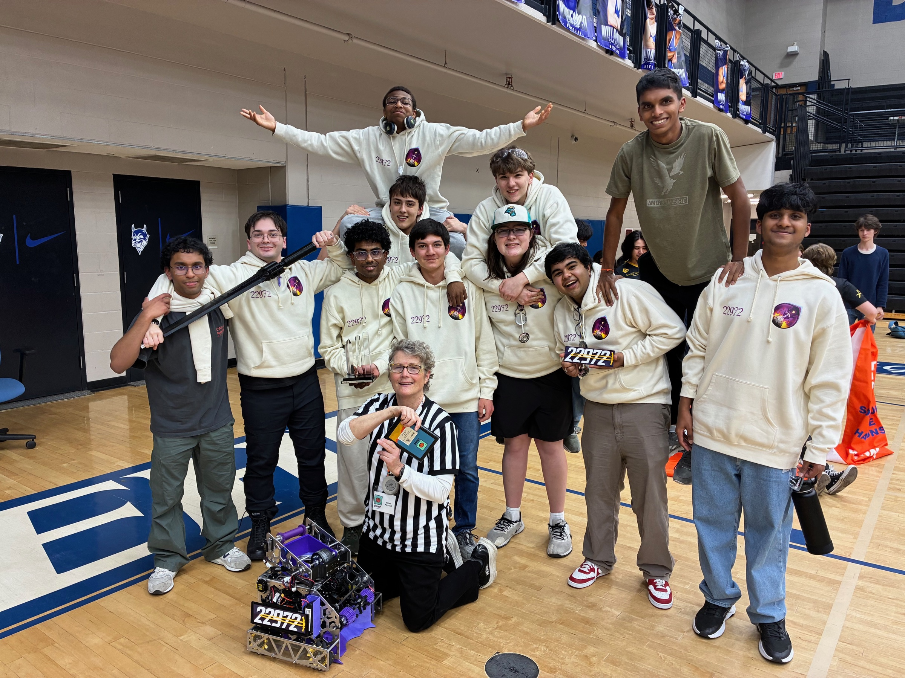

01
Intake
Custom designed TPU (90A) intake wheels collected artifacts from the field and delivered them into the spindex. The bottom rod was able to slightly move to ensure there was just enough compression.
FTC Robotics · Team 22972 Excalibur
As team captain, I helped lead a 15-person team through the design, fabrication, programming, and competition of our robot for the FTC DECODE season.

01
The robot needed to collect, identify, store, select, and score artifacts while remaining fast enough to navigate a crowded field.
We divided that process into distinct mechanisms rather than forcing one assembly to perform every task. This made the robot easier to develop in parallel and allowed individual systems to be removed, repaired, or revised without rebuilding the entire machine.
My primary mechanical responsibility was the path between collection and scoring: the spindex, transfer, and the custom drivetrain beneath them. I also assisted with the turret system.
02
System architecture

01
Custom designed TPU (90A) intake wheels collected artifacts from the field and delivered them into the spindex. The bottom rod was able to slightly move to ensure there was just enough compression.
02
Stored the maximum of three artifacts and selected which one would be sent forward to the transfer. Sensors checked the artifact as they entered to get colour information.
03
Carried the selected artifact (purple or green) from the spindex up into the turret to be scored. A combination of a servo, rack and pinion, and elastic band powered this system.
04
Rotated continuously through 360 degrees and launched artifacts into the field goals. An autonomous tracking camera (Limelight 3A) constantly tracked the goals to ensure turret was aimed correctly.
05
Angled the robot upward in the parking zone to reduce the bot's footprint in order to more easily meet the requirements for a full park.
06
Used Mecanum wheels to provide omnidirectional movement around the field. A parallel plate method was used to enable a fully custom chassis with protected wheels.
03
My primary design work

The spindex had to do more than store artifacts. It held the maximum legal capacity of three while allowing the robot to choose which artifact entered the transfer next.
I built the system around a single structural ramp. That ramp supported the spindex components while also packaging the drivetrain motors, complete transfer, and sensors into the same central assembly.
Consolidating those functions reduced the number of separate structures inside the robot, but it made spatial planning especially important. Clearances for moving artifacts, belts, motors, wiring, and service access all had to be considered in the same area.
04
Mobility and scoring

I designed the drivetrain using a parallel-plate structure rather than a standard rectangular kit chassis. This gave us direct control over the robot’s dimensions and mounting points while retaining the sideways and diagonal movement provided by Mecanum wheels.
I also assisted with the turret, which received artifacts from the transfer and launched them into the goals. Independent turret rotation separated aiming from driving and gave the team more flexibility in how the robot approached a scoring position.
05
Team leadership

As team captain, I was responsible for more than my own CAD work. I helped keep the mechanical, programming, documentation, and outreach efforts moving toward the same competition deadlines.
The season built on my previous experience with Excalibur during INTO THE DEEP. That continuity helped me recognize where clearer subsystem ownership, modular construction, and earlier integration testing could improve the team’s process.
06
Outreach

Excalibur hosted a week-long robotics camp for middle-school students. The camp introduced FTC-style design and programming while raising money to support a new team through Fort Mill 4-H.
Teaching the material forced us to explain decisions that had become automatic within our own team. It also extended the season’s impact beyond a single robot or competition result.
07
Excalibur advanced through the Upstate Qualifier and South Carolina State Championship before competing at the Carolinas Premier Event.
Upstate Qualifier
State Championship
Postseason